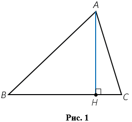
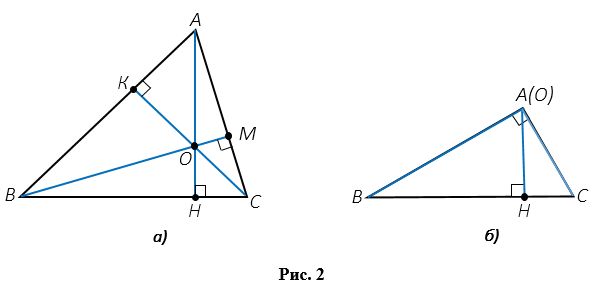
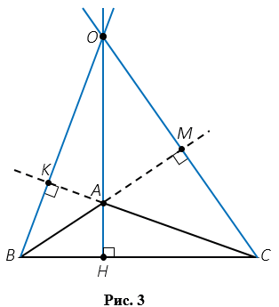

Высота треугольника - это перпендикуляр, проведенный из вершины треугольника к прямой, содержащей противоположную сторону. На Рис.1 АН - высота треугольника АВС (точку Н называют основанием высоты АН).

Любой треугольник имеет три высоты. На Рис.2(a), АН, ВМ, СК - высоты треугольника АВС (АН ⏊ ВС, ВМ ⏊ АС, СК ⏊ АВ).

Замечательное свойство высот треугольника: в любом треугольнике высоты или их продолжения пересекаются в одной точке. На Рис.2 (a,б ) в точке О пересекаются высоты треугольника АВС, а на Рис.3 в точке О пересекаются продолжения высот треугольника АВС.
